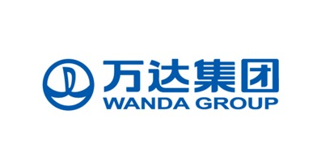

9月8日，万达集团正式加入工信部发起的区块链技术和产业发展论坛作为副理事长单位，参与《中国区块链技术和应用白皮书》编写及区块链技术和应用发展趋势研究，这标志着中国最大的线下实体商业企业已经全面加快“实体+互联网”业务布局，利用区块链和大数据、云计算等技术推进行业级的数字化转型升级。
2016年7月，工信部信软司印发了《关于组织开展区块链技术和应用发展趋势研究的函》(工信软函[2016]840号)，委托工信部电子标准院联合蚂蚁金服、万向控股、微众银行和平安保险等国内重点企业开展区块链技术和应用发展趋势研究工作。
为有效落实工信软函[2016]840号文的要求，8月5日，工信部电子标准院在北京组织召开了区块链技术和产业发展论坛筹备会暨白皮书编写启动会。工信部信息化和软件服务业司谢少锋司长，以及万向控股、蚂蚁金服、微众银行、平安科技和乐视金融等国内从事区块链技术研究和应用实践的重点企业负责人出席会议。会议由工信部电子标准院林宁书记主持。会议主要审议区块链技术和产业发展论坛方案和《中国区块链技术和应用白皮书》编写方案，讨论我国区块链技术和应用面临的机遇和挑战。
工信部信息化和软件服务业司谢少锋司长在会上指出，全球正处于新一轮科技革命和产业变革的关键时期，区块链发展迅速，其应用普及对推动经济社会发展具有重要意义。目前这个阶段，我们要准确把握趋势变化，找准我国推动区块链技术和应用发展的方向。同时强调，区块链对云计算、大数据等新一代信息技术产业的发展具有重要的推动作用，特别是对大数据的发展将带来革命性的变化，希望参会企业加强合作，按照习近平总书记4.19讲话要求，认真研究提出有针对性的建议。
随着万达集团的加入，筹备成立的区块链技术和产业发展论坛将充分发挥平台作用，加强跨行业交流合作、凝聚各方力量，系统梳理和研究国内外现状和发展趋势，提出关键技术攻关、政策标准制定和实施、生态系统建设等方面的可行性建议，发挥引领发展的作用。白皮书编写组后续将在国家有关部门的指导下，广泛汇聚国内外高端智慧和优势力量，全面落实国家战略，以推动协同创新，以提高信息治理能力、提升人民群众获得感、支撑供给侧结构性改革、保障网络空间安全为主要目标，发挥技术创新与体制机制创新的“双轮驱动”作用，为信息产业升级做出努力。
万达集团目前已加入Linux基金会下的超级账本项目，是来自中国的第一位核心董事会成员。根据论坛的精神，将积极开展国际交流与合作，牵头引入超级账本项目开源技术组织和联盟的先进经验，在推动国际标准化工作中增加中国的话语权，通过开源代码贡献，打造国际合作平台。
万达金融集团大数据与区块链领军人蔡栋表示：
万达集团作为实体行业领导者，本身拥有海量的合作伙伴和应用场景，此次能代表中国领先的科技型企业参与区块链新兴技术的行业研究，将专注于开源区块链技术研发和产业链的应用实践。万达集团将依托旗下飞凡科技的云基地以及跨实体行业的海量大数据平台，集成安全可靠的国密算法标准，和协作单位一起打造一个面向中国、连接全球的核心技术自主可控的区块链开放平台。